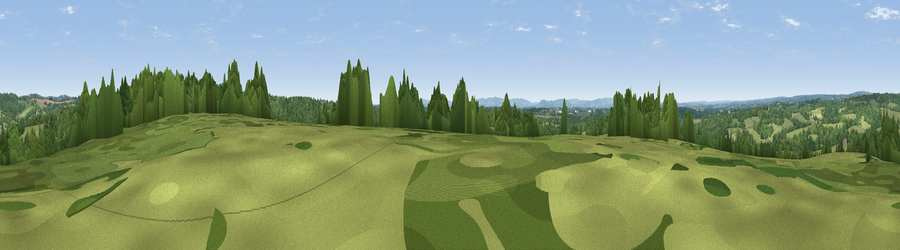

Viewpoint near Blackboys
#38359 in England · top 53% of its area beats it · near BlackboysWhere it is
The exact computed spot (TQ 53525 21125). Click the marker for map links.
The view, rendered

A 360° render of this exact spot computed from the terrain model, tree cover and land cover — summer colours, afternoon light, calibrated against photographs of famous viewpoints. Real trees, hedges and buildings will differ in detail.
The panorama
Grey silhouette: terrain skyline in each direction (720 bearings, Earth curvature and refraction included). Dashed green: skyline with trees (+15 m) and buildings (+8 m) as obstacles. Blue strip: how far the ground is visible on each bearing.
Where the view opens
Wedge length = distance to the farthest visible ground on that bearing (vegetation-aware). Rings at 10, 25 and 50 km.
What fills the view
51% woodland · 42% grassland · 5% cropland · 1% built-up
Angular shares of the visible panorama (visual magnitude), not map area. Landscape diversity 0.40 (0–1 Shannon).
Key numbers
More beautiful places nearby
The staircase of upgrades: each row has a higher view potential than everything closer. Driving times are estimates from straight-line distance, calibrated against real road routing — check an actual route before setting out.
| Place | Direction | Drive | Score |
|---|---|---|---|
| Viewpoint near Cross in Hand | E · 2 km | ~5 min | 37.4 |
| Viewpoint near Cross in Hand | ENE · 2 km | ~6 min | 51.6 |
| Viewpoint near Cade Street | E · 8 km | ~16 min | 56.7 |
| Viewpoint near Rushlake Green | ESE · 10 km | ~20 min | 57.4 |
| Viewpoint near Upper Hartfield | NNW · 13 km | ~24 min | 59.6 |
| Viewpoint near Dallington | E · 13 km | ~25 min | 67.2 |
| Brightling Obelisk [Brightling Down] | E · 13 km | ~25 min | 69.1 |
| Viewpoint near Glynde | SW · 14 km | ~26 min | 70.8 |
50.96909, 0.18513 · source: screening · position refined by local search. Computed location — check access rights before visiting.